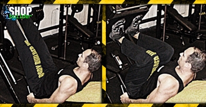

Ugrás a tartalomra
Ugrás a tartalomra
Testépítés
Lábtolás
{kind=link}
Hatás
Ez a gyakorlat egy fordított guggolásra emlékeztet, bár a legtöbb edzőteremben állítható támlájú 45o-os lábtológép van. Sok testépítő jobban kedveli ezt a gyakorlatot, mint a guggolást, mert lehetővé teszi, hogy teljes mértékben a láb mozgására összpontosítsanak, anélkül, hogy a csípő jelentősebb mértékben részt venne a mozdulatban. Sokkal kisebb a sérülés veszélye is, mint a guggolás esetében, ezét kimondottan javasolt azoknak a sportolóknak, akik a súlyzós edzést valamilyen más sport mellet kiegészítésként végzik. Az elfogadott nézet szerint azonban a lábtolás nem építi olyan hatékonyan a combizmokat, mint a guggolás.
Kiinduló helyzet
Helyezd a lábaidat egymástól mintegy harminc centiméterre a készülék taposólemeze alá.
A mozgás
Nyomd ki a lábaidat, amíg a lábad ki nem egyenesedik, de a térdedet ne akaszd ki. Engedd vissza a súlyt, és ismételd a gyakorlatot.
Edzéstipp
A gyakorlat egy lábbal is végezhető, így koncentráltabban tudsz az adott izomra dolgozni, valamint aszimmetriaproblémák esetén is hasznos lehet ez a módszer. Ügyelj rá, hogy ne akaszd ki a térdedet a gyakorlat csúcspontján. Minél szélesebb terpeszben dolgozol, annál hangsúlyosabb lesz a comb belső részére irányuló terhelés, és minél szűkebb a terpesz, annál jobban stimulálod a comb külső részét.